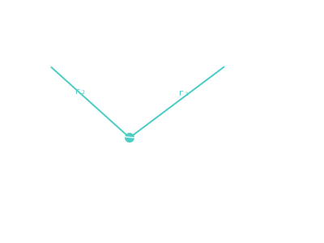

Lambert's Problem
Given two positions and a transit time, find the orbit that connects them — the central problem of every interplanetary trajectory.

101 · zoom in
The Hohmann transfer is the cheapest path from one orbit to another, but most missions don't actually fly Hohmanns. They want to leave on a specific date — say, when a particular rocket is ready, or when a particular launch pad is open — and they want to arrive on a specific date — say, in time for a Mars dust storm to subside. Hohmann doesn't let you pick. Lambert does.
Lambert's question is simpler-sounding than its math: I'm at point A, I want to be at point B, and I want to take exactly this many days getting there. What orbit should I fly? Lambert wrote down the answer in 1761 — there's exactly one ellipse (or sometimes two, depending on which way around you go) that connects two points in a given time.
This is the heart of every porkchop plot you'll see. Each pixel on the porkchop in /plan is one Lambert problem: 'leave Earth on date X, reach Mars on date Y — what does it cost?' The colour is the answer. Solve it ten thousand times in parallel and you get the whole map at once. Orrery does this in a Web Worker so the UI doesn't freeze while it's thinking.
Lambert's problem asks: I'm here, I want to be there, and I have this much time. What ellipse should I fly? Two position vectors and a time of flight, and the equation produces the unique transfer orbit (or two — there's a long way and a short way around the central body).
The Hohmann transfer is one specific Lambert solution: positions at opposite apsides, time of flight equal to half the transfer ellipse's period. Pull either knob — different positions, different time — and you get a different ellipse. Tighter time, more eccentric ellipse, higher departure energy. The math doesn't change; only the boundary conditions.
Orrery solves Lambert's problem in a Web Worker every time you hover a porkchop cell on `/plan`. Each cell asks: 'leave Earth on date X, arrive at Mars on date Y — what's the ∆v cost?' The colour you see is the answer to that question, computed once per pixel.